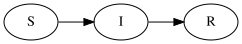
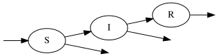
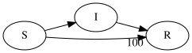
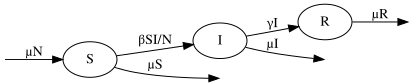
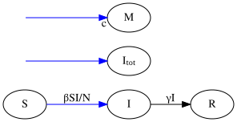

Introduction#
Although the “O” in PyGOM stands for Ordinary Differential Equation (ODE), the package is fundamentally built around compartmental models.
A compartmental model describes how entities move between different states or categories. A defining (and simplifying) feature of such models is that rather than tracking every individual entity, we track the total quantity present in each state. Examples from different fields include:
Epidemiology: individuals move between disease states
Chemistry: atoms form different molecules
Economics: money moves between individuals or sectors
Ecology: animals move between age classes, locations or behavioural states
These systems are described in terms of the fundamental concepts:
The compartments we wish to track
The transitions that move quantities between compartments
The events that trigger those transitions
We shall now illustrate these ideas, making use of the simple Susceptible–Infected–Recovered (SIR) epidemic model.
Compartments#
A compartment represents a category that entities may occupy. At any one time, the state of the system is completely determined by the populations of these compartments and is represented by the state vector: \(\boldsymbol{y}\)
Warning
The word “state” is also used to refer to the compartments themselves. For example, we may talk about “disease states” S, I and R, and other times refer to the “state of the system”, \(\boldsymbol{y}\).
For example, the SIR epidemic model contains three states:
where S, I and R give the total number of Susceptible, Infected and Recovered indivduals respectively.
The state vector tells us the current state of the system, but to describe how the system evolves, we must define the possible movements individuals can make.
Transitions#
A transition describes how entities move to and from compartments.
Between compartments#
In these types of transition, entities move between compartments. In the SIR model example, there are two such transitions:
Infection, moving an individual from the S to the I compartment
Recovery, moving an individual from the I to the R compartment
These may be represented graphically, where compartment counts are represented by nodes and transitions by directed edges, as follows:

Birth and Death processes#
Transitions need not occur between two existing compartments, in fact, entities may enter or leave the modelled system.
For example, an SIR model with births and deaths might include the transitions:
Individuals being born into the S compartment
Individuals potentially dying whilst in any of the S, I or R compartments
To indicate these graphically, birth and death processes lack an origin or a destination state respectively:

Transition magnitudes#
So far, every transition has changed the population of a compartment by exactly one unit. This is common in epidemic models, where transitions often correspond to individual people changing state. However, to allow for study of more general systems, PyGOM enables transitions to have arbitrary magnitude.
Non-unit transitions arise naturally in many applications. For example, chemical reactions frequently consume and produce multiple molecules in a single reaction.
To produce an example which builds on the SIR model requires a bit of imagination. Suppose vaccinations are administered through periodic mass-vaccination campaigns. If each round vaccinates 100 susceptible individuals, then a vaccination transition might be represented as the transfer of 100 people from S to R.
Graphically, we indicate the magnitude by adding an annotation to the arrowhead. Arrowheads without annotation are, of course, assumed to have magnitude of one.

The transition still describes movement between compartments, only now the amount being transferred has changed.
Events#
A transition describes how entities move, but it does not describe when those movements occur. To fully specify the dynamics of a compartmental model, we introduce the concept of events. An event combines:
the rate describing how often it occurs
one or more transitions that occur when the event happens
For example,
the infection event in the SIR model occurs at rate \(\frac{\beta S I}{N}\) and triggers the \(S \rightarrow I\) transition
the recovery event occurs at rate \(\gamma I\) and triggers the \(I \rightarrow R\) transition
the death event in, say, the recovered compartment occurs at a rate, \(\mu R\), triggering the \(R \rightarrow\) transition
the birth event occurs at a rate, \(\mu N\), triggering the \(\rightarrow S\) transition
the vaccination event occurs at rate \(v S\) and triggers the transition \(100 S \rightarrow 100 R\).
Note
For the vaccination event, we see that we might equally think about the event inducing a singular vaccination transition 100 times, rather that the magnitude being contained within the transition. This is just a matter of convention and the one chosen for PyGOM is that the magnitude is specified with the transition.
In our simple SIR example with births and deaths, there is a one-to-one correspondence between transitions and events. This makes it easy to represent graphically, where the transitions are annotated by the corresponding rate.

Multi transition events#
More generally, a single event may cause multiple transitions to occur simultaneously. For instance, suppose we wish to track both the cumulative number of infections and the resources used in an epidemic. We introduce two additional compartments:
\(I_{tot}\): Cumulative infections
\(M\): Cumulative monetary cost
Now, whenever infection occurs, three transitions occur simultaneously:
An individual moves from S to I
\(I_{tot}\) increases by 1
\(M\) incrases by the cost, \(c\)
This can be shown graphically as follows:

We indicate the simulteneity of the infection and cost transitions by the shared blue colour (note that multiple transitions in the default colour, black, are not implied to be simultaneous). Since transitions belonging to a common event have the same underlying rate, only one rate needs be specified on the graph.
This distinction between transitions and events is fundamental to the way PyGOM represents compartmental models.
Summary#
A compartmental model in PyGOM is defined by:
a collection of compartments
a collection of transitions describing permitted movements
a collection of events, each consisting of
an event rate
one or more transitions
These concepts are sufficient to define the structure of a model. In the next section, we show how they can be represented mathematically and how the resulting representation may be solved.